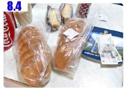

大雨下了一夜之後，在天亮的同時停止，天色陰霾、氣溫涼爽，如果今天不要再下雨的話那真是一個騎車的好天氣。
離開昨天轉進來的小道，接回大馬路準備要進入城市，在入城之前的外圍商圈就可以感受到大城市的氛圍。
豎立著的招牌有三分之一都是我熟悉的國際品牌，早餐要不要去麥當勞叔叔家報到呢～要是那邊有無線網路就好了。
一小時後出現一間看起來蠻適合我待一早上的餐廳，每天露營醒來之後第一個目標都是找一間能夠洗臉和整理遊記的餐廳。
餐廳裡除了在盤點的員工之外沒有其他客人，早上我就一邊在打掃阿姨的拖地中抬起腳和喝咖啡整理遊記中渡過。
入城要過一座大橋，河面也很寬廣，水質依然清澈，一路上的大城市都是冒著黑煙的工業區，怎麼保持河流不受污染？
之前過一座小小的橋就有關卡檢查站要我交出通行證，現在過這座龐然大物的橋樑則連個關卡都沒有。
進入城市以及各個聯邦的交界處也是一樣的情形，關卡嚴格的程度差異很大，有的每一輛車都要攔下，有的只看見一個打哈欠的警察站在路邊。
在城裡的一間商店買點東西吃，商店的門口有幾個年輕人喝著現買的啤酒，不以為意，反正我只是來買東西。
這間商店很奇怪，進去後我直接打開冰箱，拿出兩個牛奶冰淇淋，就被店員喝止，我拿出盧布說要付錢也不行。
冰淇淋就這麼被放回冰箱裡，不讓我買，員工手指著收銀櫃檯，要我先去那邊繳錢才可以拿東西。
這真的很難搞，不拿著東西我要怎麼說明想買什麼呢？
在其它的商店買東西很容易，只要手指著想買的東西，員工就會拿下來，然後按計算機結帳，一點難度也沒有。
現在我必須面對收銀員的晚娘面孔，用俄文說出我想買的東西和價錢，沒錯，連價錢都要自己講。
這讓我非常頭痛，站在收銀員面前，我指著她能夠看的見的一條麵包和標價，說要這個。
然後又走回冰箱，想拿出一個冰淇淋當作樣本給收銀員看，結果冰箱才打開一條縫隙而已，又被員工很兇地給硬關起來，叫我先去結帳才可以買。
這樣的情況引起店內一些客人的訕笑，不知道是在笑我連東西都不會買，還是笑這個員工如此不通情理。
所幸在這樣的舉動中，收銀員知道我想買冰淇淋，又打在清單上面，付過錢之後拿著列印出來的清單才去領商品。
這很像過去舊時代的感覺，買東西要拿著清單去兌換，然後兌換區都是大排長龍等著領東西的窮苦人家。
兌換過的清單則會被對半撕開，表示這一張已經作廢，不能重覆換商品。
即使是在比較現代化的商店也是同樣的做法，但是會先拿商品、然後付錢，最後才列印清單，接著一樣對半撕開作廢。
在店裡面引客人發噱讓我有點不好意思，離開商店之後頭也不回地就騎車離開。
剛才在門口喝酒的年輕人大聲吹著口哨說了一些話，很明顯是想叫我回去，心裡想說大概是目睹剛才我在商店裡的情形，想要聊個天什麼的。
面對一大早就在喝啤酒的年輕人，我並沒有停下腳步，假裝沒有聽見繼續騎走。
一百公尺之後，臉上滴到雨水，想拿起帽子戴，才發現不見了，肯定是在商店門口整理東西的時候給掉了。
那些年輕人吹口哨也沒別的意思，只是想提醒我帽子掉了而已，掉過頭回去拿帽子，又誤會了別人的好意，這真是比不會買東西還慚愧。
在市區閒晃的時候雨就淅瀝嘩啦地落下了，沒有城市觀光的心情，只想離開這座城市，接上通往莫斯科的道路。
在市區中是不會看見『莫斯科請往這邊走』的告示牌，自己亂繞的情況下感覺又要迷路了。
這邊能通到莫斯科嗎？路未免太小條了一點，心裡的疑問很多，只有繼續往前騎才有辦法證明到不到得了。
很幸運地在路旁看到拿著手持測速機器的警察在值勤，有些人覺得跟陌生人問路會有被唬爛的可能性，那麼問警察就很妥當了。
他說這邊是可以到莫斯科的，隨後又附帶了一些聽不懂的話，但只聽懂可以到莫斯科這句話就足夠，其它就算要繞個路也無妨。
拐幾個彎，一下在郊區、一下又進入城區，就算手上有地圖也不見得能搞得清楚自己身在何方。
看見商店的時候再度去補給一點食物，這次買東西就簡單多了，跟以前一樣，手指一比、掏出盧布就搞定，買一大盒綜合果汁止渴。
商店的旁邊是一間露天的蔬果攤，各式各樣的蔬果顏色很漂亮，看起來也都很好吃的樣子，而且價錢也是超便宜。
老是喝果汁也不夠天然，拿了三個漂亮的番茄吃點新鮮的水果，秤過重之後只要十七盧布。
新鮮的番茄味道很好。酸酸甜甜的～本來想買來當儲糧，結果沒兩下子就通通進了肚子裡。
離開商店拐個彎又進入了郊區，城市規劃得真是超級獨特，或者應該說是綠意盎然。
闖平交道的交通意外也許很常發生，所以平交道的柵欄放下的時候，路面都會升起防止硬闖的障礙物。
我很能體會俄羅斯駕駛人想闖平交道的心情，因為柵欄往往一放下來之後就像是壞掉一樣久久都升不上去。
一開始我也很乖地在平交道這邊等火車經過，三分鐘之後什麼東西都沒有，又跟之前一樣繞旁邊的路通行，看得其他苦等的駕駛人心癢癢。
距離警察跟我說這條路能夠到莫斯科已經騎了有一點距離，一路上也東彎西繞，心裡又懷疑起自己走的路是不是對的？
反正看到人就勇敢地問路，接下來總算是離開城市的範圍，重新看見了通往莫斯科的指示牌，再度返回綿延不絕的馬路上。
然後就比較無聊了，路線轉趨筆直，以朝西邊微微偏南的方向直行，路雖然是直的，但卻是上下坡連續的山路。
昨天遇見迪馬的時候，看著地圖他就跟我說這一段直路很不好走，他在這邊吃足苦頭，我騎自行車也得加油。
雨一直下，還以為沒兩下子就會停，結果沒兩下子是我全身又變得濕答答。
俄羅斯的天氣變化得很明顯，這陣子白天要是出太陽的話，氣溫都是三十五度以上，現在一下雨，馬上往下掉十五度，變成二十度徘徊。
身上淋濕又吹著冷風很不好受，有一種愛睏的感覺。
找個能躲雨的地方暫避片刻，剛進來的時候還以為是歇業中的餐廳，卸下包包之後坐在睡袋上面，拆一條早上買的大麵包當午餐吃。
這個麵包真是便宜，那麼長一條而且口感厚實，售價只要十盧布而已，若是買吐司造型的麵包那價錢更便宜，但是那個口感比較粗一點。
啃著麵包配水壺裡的自來水，這樣也是一餐～
吃飽之後身上還是很濕冷，而且更加想睡，反正雨也沒有停的意思，就蹲坐在屋簷下睡了起來。
半夢半醒之間好像有個男人在看著我，睜開眼睛真的是一個中年胖肚子大叔，直覺他也是來躲雨的，但並不是，他是住在這棟房子裡頭。
我還以為是空屋，居然是有住人的，比了手勢說我可以在這邊躲雨小睡一下嗎？
其實這樣問是多餘的，要是他不願意讓我待在這邊，早就把我叫起來趕走，哪有可能讓我睡到自然醒又接著睡回籠覺。
瞇了一個小時，雨勢稍緩，把握時間往前騎，烤肉店林立的地方，路旁種的白樺樹林就會有明顯的砍伐跡象。
店家用的都是白樺樹的木頭，無一例外，難道用這個烤出來的肉味道會比較好嗎？
烤肉雖然真的很好吃，可是看到為了美食而犧牲的樹木真是令人難過，以後少吃一點烤肉，多啃一點十元麵包好了。
騎到了下一間商店的時候，又買了兩條麵包當儲糧，三個冰淇淋則是今天騎車爬山路的犒賞點心。
商店的外頭有一隻比主人還大的狗，毛茸茸的很可愛，很想騎在上面跑跑看，可是牠的舌頭居然是紫色的，吃了什麼奇怪的東西嗎？
今天也不想住旅館，白天的時候只要能看見洗手台，就把握機會地洗了好幾次臉，水壺裡也都裝滿了冰涼的自來水。
晚上八點多的時候先解決晚餐的問題，對著餐廳的阿姨，說自己看不懂菜單，接著她就念菜名問我想吃什麼？
我就一律回答『是』，這可是選擇題，用是非題作答的話會吃到什麼是無法預測的。
但是餐廳的阿姨非常會點菜，一直說是，吃到了離開中國以來最接近中國菜的晚餐。
這一盤是排骨飯呀！！裹著麵衣、炸的酥香的排骨、配著淋上肉汁的白飯，番茄醬跟小黃瓜有點奇怪，但是不管它。
看起來是排骨飯，吃起來也的確是排骨飯的味道～相當令人感動的家鄉風味 T_T
除了排骨飯之外，還有一碗雞湯麵，裡面有一塊燉得軟嫩的雞腿肉，湯頭味道很鮮美，配上白色麵條和白煮蛋，這裡真的是俄羅斯嗎？
擺脫了馬鈴薯無處不在的餐點，這一頓飯吃得開心又滿意。
今天騎車的目標很簡單，早上一起床就看到的烏雲，今天只要能夠騎離開它籠罩的範圍就算收工了。
因為不知道這個範圍有多廣，所以就當成一個目標，吃過飯之後再往前騎一段路，這個目標就有實現的可能了。
過橋之後的天空已經分為黑白兩派，黑色的是盤據在上頭一整天，不時還下著雨的烏雲，遠方則是明亮的天空，那裡就是今天的目標了。
如果小時候我住在這個村子的話，這棟房子一定會是童年的鬼屋。
看起來的確沒住人的樣子，鐵門上掛著的好像是出售中的牌子，要是在這樣的空屋住上一夜，晚上會不會有幽靈作伴？
里程表顯示今天騎了一百二十公里，也擺脫了烏雲籠罩的範圍，抬頭向前看已是藍天白雲，目標達成了就可以準備休息了。
這時候正在山路上，旁邊有一個水泥的公車站，乾淨而寬敞，隱蔽度幾乎是零，但是沒有路人會在這邊遊走，除非車子停下來。
睡在這邊也未嘗不可，卸下包包準備露營的裝備。
前幾天都睡在泥土地上，墊在最下方的睡墊已經佈滿了塵土，從收納袋中打開時看起來很像某個剛挖掘出土的文物一樣。
這個公車站的椅子是水泥作的，平整而且中間沒有一條一條的空隙，睡在上面超平坦舒適。
公車站的大小真的要說的話，正好是一間單人房的尺寸，停著小多，包包放在三分之一的椅子上，剩下的就是睡覺的地方。
三面擋風的公車站有一面不擋風，剛好風就是從這邊吹過來，晚上肯定會很冷，睡袋就勤快地打開來保暖。
整理照片和GPS軌跡的時候，手一時很賤，本來應該按讀取軌跡，結果按成刪除軌跡，
所以今天的GPS軌跡就這麼消失了，連搶救的機會都沒有。
晚上睡得很好，完全不受汽車明亮頭燈和呼嘯噪音的干擾，大概之前已經睡過一次，對於這種情形已經漸漸習慣。
凌晨兩點的時候肚子突然痛了起來，爬出溫暖的睡袋要去大便的時候，寒風一陣吹拂，當下有心臟麻痺的感覺，真是冷到爆呀！
蹲在草地上方便，什麼時候肚子不痛，偏偏挑一個睡得正好的凌晨兩點，抬頭仰望星空，好美的夜景。
才想著等一下拿出相機拍下這繁星點點的畫面，等到爬回暖呼呼的睡袋中時，一切都拋在腦後了～沒什麼比睡覺還重要的。
繼續閱讀：8.5 二十四小時衝刺
俄羅斯-盧布－ 1：1.3 台幣
8.4
總計：328.5元
橘子汽水35元、商店麵包一條、冰淇淋二個18.5元、綜合果汁、高級餅乾71元、番茄三顆17元、商店麵包兩條、冰淇淋三個35元、晚餐排骨飯、雞湯麵、麵包、鳳梨汁152元
庫斯土布>佩斯多幅 120.14KM